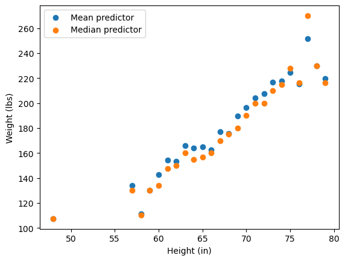
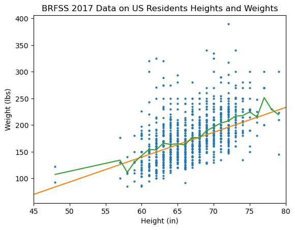
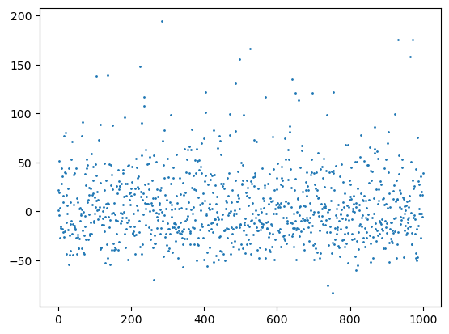
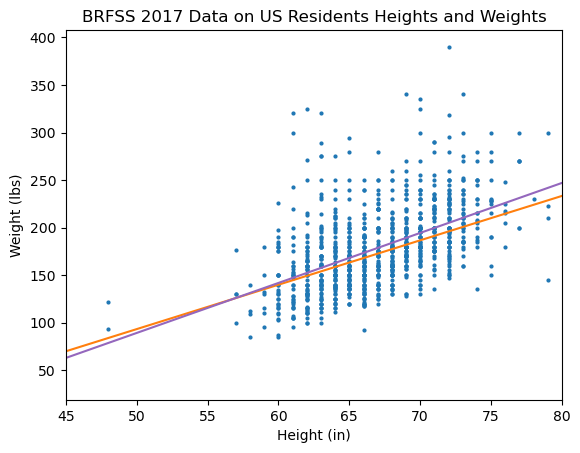
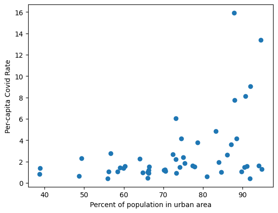
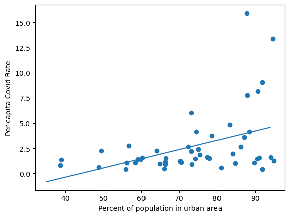

Linear Regression
Contents
11.4. Linear Regression#
One of the goals of data science is to not just be able to determine whether effects are significant but to also make predictions from data. In this section, we consider the problem of trying to find a good linear predictor from a data set. Let’s use the BRFSS data set on heights and weights to make this more clear.
Consider again the scatter plot of the weights in pounds as a function of the heights in inches:
import pickle
import matplotlib.pyplot as plt
with open("brfss17.pickle","rb") as file:
brfss=pickle.load(file)
plt.scatter(brfss['HEIGHT'], brfss['WEIGHT2'], 4)
plt.xlabel('Height (in)')
plt.ylabel('Weight (lbs)')
plt.title('BRFSS 2017 Data on US Residents Heights and Weights');

In making this scatter plot, we have already made some choices about how we interpret this data. When we put the height on the \(x\)-axis, we are treating it as an independent variable, and by putting the weight on the \(y\)-axis we are treating it as a dependent variable. However, this language is somewhat problematic, because if weight is dependent on height, then height is also dependent on weight. Thus, we may instead ask how the weight responds to the height. The height is called the explanatory variable, and the weight is called the response variable:
DEFINITION
- explanatory variable#
A variable or feature used to predict or explain differences in another variable. Sometimes called an independent variable, especially if this variable is a variable that is under an experimenter’s control.
DEFINITION
- response variable#
A variable or feature that is to be predicted or explained using another variable. Sometimes called a dependent variable, especially if this variable is measured as the result of an experiment.
When we consider prediction, we can ask questions about points for which we do not have data, such as “what is the predicted weight for a US adult that is 53 inches tall?”. Or we can ask to give a single prediction for a point for which we do have data, but for which the data does not give us single answer. For instance, if we ask “what is the predicted weight for a US adult that is 70 inches tall?”, the data spans a wide range. Let’s use the Pandas dataframe query() method to get a view of the dataframe containing only those entries where the HEIGHT feature is equal to 70:
height70 = brfss.query('HEIGHT==70')
A convenient way to get the minimum, maximum, median, and average, along with other useful information is to use the describe() method:
height70['WEIGHT2'].describe()
count 74.000000
mean 196.472973
std 38.385650
min 130.000000
25% 175.500000
50% 190.000000
75% 210.000000
max 335.000000
Name: WEIGHT2, dtype: float64
We see that for people in the sample who are 70 inches tall, the weight spans from 130 to 335 pounds, with a sample mean of 196.5 pounds. The median is the point 50% of the way through the data, and it is 190 pounds. Given this wide range, how should we choose a single value to predict the weight for someone who is 70 inches?
First let’s consider only using the values at a specific height to predict the weight. The graph below shows two predictors built this way: one uses the conditional mean given the weight, and the conditional median given the weight.
import numpy as np
heights = np.sort(brfss['HEIGHT'].unique())
mean_predictor = []
median_predictor = []
for height in heights:
mean_predictor += \
[brfss.query('HEIGHT == ' +str(height))['WEIGHT2'].mean()]
median_predictor += \
[brfss.query('HEIGHT == ' +str(height))['WEIGHT2'].median()]
plt.scatter(heights, mean_predictor,
label='Mean predictor')
plt.scatter(heights, median_predictor,
label='Median predictor')
plt.xlabel('Height (in)');
plt.ylabel('Weight (lbs)');
plt.legend();

Either of these approaches look reasonable with some limitations:
The overall relation looks roughly linear, but there is some significant variation away from a line, especially for high or low heights, where the data gets sparse.
This can still only give a prediction of weights for a person if we already have people of their height in our dataset.
We can resolve both these problems by using all of the data to find a single line that represents the relation between height and weight. But how to do that? We could look at the data and guess a line to fit it. For example, consider these two observations:
the center of the weight data at a height of 60 inches is about 140 pounds, and
the center of the weight data at a height of 75 inches is about 220 pounds.
The slope of the line going through those two points is:
m1 = (210-140)/(75-60)
m1
4.666666666666667
An equation that goes through those points is
b1=-140
Here is the scatter plot with this line overlaid, along with an interpolated version of the mean predictor we previously created:
plt.scatter(brfss['HEIGHT'], brfss['WEIGHT2'], 4)
plt.xlabel('Height (in)')
plt.ylabel('Weight (lbs)')
plt.title('BRFSS 2017 Data on US Residents Heights and Weights');
import numpy as np
x= np.arange(45,81,1)
plt.plot(x, m1 * x + b1, color='C1')
plt.plot(heights, mean_predictor, color='C2')
plt.xlim(45,80);

This simple approach to finding a line of fit produced a very good match for this data set, but this approach still suffers from several problems:
This approach required human judgment as to which two points to use – it is not easily automated.
For many data sets, it will not be as easy to choose which two points to draw the line through.
This line is not necessarily optimal in any sense.
A predictor that is created in this way is known as an ad hoc predictor, which indicates that the predictor was created without any formal approach that can be applied to general prediction problems.
Let’s consider measuring how good or bad this line of fit is. Letting \(\mathbf{h}\) and \(\mathbf{w}\) be vectors of the heights and weights, respectively, e can find the errors between the true and predicted weights as
The graph below shows these errors:
w = np.array(brfss['WEIGHT2'])
h = np.array(brfss['HEIGHT'])
errors = w-(m1*h +b1)
plt.scatter(np.arange(len(errors)), errors, 1)
<matplotlib.collections.PathCollection at 0x7f9c09021fa0>

There is no way to make all these errors go to zero: if we move the line up, then some of the positive errors will get smaller, but the negative errors will grow in magnitude. If we move the line down,the reverse will occur. The best we can do is to minimize some metric that combines all of these errors. A common choice for this metric is the mean squared error (MSE),
errors = w-(m1*h + b1)
print(f'The MSE for our linear predictor is ' +
f'{np.sum(errors**2)/len(errors) : .1f}')
The MSE for our linear predictor is 1373.1
11.4.1. Linear Regression: Linear Prediction to Minimize the Mean-Square Error#
We can use the MSE to find the best line to fit the data in the sense that it minimizes the MSE between the line and the data. The line that we find in this way is called the least-squares line of fit, and the overall approach is called simple linear regression or ordinary least squares (OLS). Here the term simple refers to the fact that there is one explanatory variable and one response variable, which is the only case we will consider in this book. (When there are more than two explanatory variables used for prediction, it is called multiple linear regression.) In the remainder of this book, the term linear regression will refer to simple linear regression.
A very general approach to linear least squares problems, including linear regression, is given in Chapter 14, but for simple linear regression we can solve for the coefficients of the line that minimizes the mean square error using simple calculus.
Consider a simple linear regression problem with explanatory variable \(x\) and response variable \(y\). Let the equation for our line of fit be \(\hat{y}_i = a x_i +b\), where \(a\) and \(b\) are constants that we wish to find to minimize the MSE:
We can find the derivative by taking derivatives with respect to \(a\) and \(b\) and setting equal to 0. Let’s start with the derivative with respect to \(b\):
Rearranging, we have
Note that the solution for \(b\) depends on \(a\), but we can substitute this value for \(b\) into the equation for the MSE and then take the derivative with respect to \(a\):
Rearranging and dividing both sides by \(n-1\), we have
Let’s use these equations to calculate the regression line for our height and weight data. As a reminder, we are taking \(h\) as the explanatory variable and \(w\) as the response variable. We can get the value of \(a\) from the covariances between \(\mathbf{h}\) and \(\mathbf{w}\), which we can get from NumPy as follows:
K=np.cov(h,w)
print(K)
[[ 17.62862763 92.671004 ]
[ 92.671004 1819.51562663]]
Then the slope \(a\) is
a = K[1,0] / K[0,0]
print(f'a = {a}')
a = 5.256847325923976
The value of \(b\) is then easily calculated from \(a\) and the means of \(\mathbf{h}\) and \(\mathbf{w}\):
b = w.mean() - a * h.mean()
print(f'b = {b}')
b = -173.54702768423235
In practice, we do not need to use these formulas. We can directly use the stats.linregress() function from SciPy.Stats to find the parameters of this line. The arguments of stats.linregress() are two data vectors for which we wish to determine the least-squares line of fit. Let’s run this on our height and weight data, and then we will discuss the output:
import scipy.stats as stats
regress1 = stats.linregress(h,w)
print(regress1)
LinregressResult(slope=5.256847325923976, intercept=-173.54702768423235, rvalue=0.5174360956301058, pvalue=1.4295072346973568e-69, stderr=0.2751921202251443, intercept_stderr=18.474278531109427)
The output is an object called a LinregressResult that has six members. It should be clear that the slope and intercept are equivalent to the values \(a\) and \(b\) that we found using the formulas derived from calculus.
The slope and intercept for the line of fit from linear regression are also very close to the values that we found by inspection. The two linear predictors are shown below:
m2 = regress1.slope
b2 = regress1.intercept
plt.scatter(brfss['HEIGHT'], brfss['WEIGHT2'], 4)
plt.xlabel('Height (in)')
plt.ylabel('Weight (lbs)')
plt.title('BRFSS 2017 Data on US Residents Heights and Weights');
import numpy as np
x= np.arange(40,86,1)
plt.plot(x, m1*x + b1, color='C1', label='Ad Hoc Predictor')
plt.plot(x, m2*x + b2, color='C4', label='Linear Regession')
plt.xlim(45,80);

Now let’s check the MSE to see whether this line is actually better than the MSE For the ad hoc predictor:
errors2 = w - (m2*h + b2)
print(f'The MSE for the least-squares linear predictor is' +
f'{np.sum(errors2**2)/len(errors) : .1f}')
The MSE for the least-squares linear predictor is 1331.0
Thus, the least-squares linear predictor is slightly better than our ad hoc approach.
11.4.2. Variance Reduction of Linear Prediction#
Consider the rvalue element returned by stats.linregress(). Let’s compare it with the correlation coefficient between the heights and weights:
brfss.corr()
| HEIGHT | WEIGHT2 | |
|---|---|---|
| HEIGHT | 1.000000 | 0.517436 |
| WEIGHT2 | 0.517436 | 1.000000 |
print(regress1.rvalue)
0.5174360956301058
We see that the rvalue is the correlation coefficient, for which we have used the notation \(r\). We previously saw that the value of \(r\) indicates how close the data is to a linear relation. In fact, we can use \(r\) to calculate the MSE as
where \(\sigma_{w}^2\) is the variance of the weight feature.
Let’s check this for our height and weight data:
r=regress1.rvalue
print(f'Analytical MSE = {w.var()*(1-r**2):.1f}')
Analytical MSE = 1331.0
We see that the analytical MSE matches the MSE achieved from regression. For linear regression involving only two variables, the value \(r^2\) is called the coefficient of determination:
DEFINITION
- coefficient of determination (simple linear regression)#
In simple linear regression between two data vectors \(\mathbf{x}\) and \(\mathbf{y}\) with Pearson’s correlation coefficient \(r\), the coefficient of determination is the value \(r^2\) (pronounced “R squared”), which is also denoted \(R^2\).
Note that the MSE can be written as
The MSE achieved by linear regression can be described in terms of total variance and explained variance:
DEFINITION
- total variance (simple linear regression)#
In simple linear regression between explanatory vector \(\mathbf{x}\) and response vector \(\mathbf{y}\), the total variance refers to the variance of the response vector, \(\sigma_{y}^{2}\), which is the variance without using the explanatory vector to predict the values in \(\mathbf{y}\).
DEFINITION
- explained variance (simple linear regression)#
In simple linear regression between explanatory vector \(\mathbf{x}\) and response vector \(\mathbf{y}\), the explained variance is the variance in the response data after subtracting off the values predicted from the explanatory data. The explained variance is \(r^2 \sigma_{y}^{2}\), where \(\sigma_{y}^{2}\) is the variance of \(\mathbf{y}\) and \(r^2\) is the coefficient of determination.
In the context of our example, the idea is this: if we know a person’s height, we should be able to make a better guess of their weight than if we did not know their height. If we use the linear predictor that minimizes the MSE, then \(r^2\) is the proportion of the total variance in the person’s weight that can be “explained” – i.e., predicted – using the person’s height. In this case the variance is reduce on average by approximately 27%:
regress1.rvalue**2
0.26774011306092804
11.4.3. Correlation is not causation!#
“Correlation is not causation” is a common expression used by statisticians. It means that just because two variables are correlated, that does not mean that one of the variables caused the other to occur. Given features \(x\) and \(y\) that are correlated any of the following can be true:
\(x\) causes \(y\),
\(y\) causes \(x\),
\(x\) and \(y\) both “cause” each other (for instance, Wikipedia gives the example that people who cycle have a lower body mass index (BMI), but people with a lower BMI may be more likely to cycle),
one or more other factors cause both \(x\) and \(y\) (for instance, in our height and weight data, these third factors could include genetics and nutrition), or
the correlation is “spurious”, meaning that it is a random effect.
Spurious correlations are easy to find given enough different data sources. In fact, there is an entire website dedicated to Spurious Correlations at https://www.tylervigen.com/spurious-correlations
I have included a few example from that website (CC BY) below:


To give you an idea how strong some of the spurious correlations, I have extracted the data from this last graph:
pets=[39.7, 41.9, 44.6, 46.8, 49.8,
53.1, 56.9, 61.8, 65.7, 67.1]
lawyers=[128553, 131139, 132452, 134468, 136571,
139371, 141030, 145355, 148399, 149982]
Now we can run our own linear regression:
regress2 = stats.linregress(pets,lawyers)
print(regress2)
LinregressResult(slope=751.0366939629846, intercept=99122.32476039219, rvalue=0.9983862040448526, pvalue=2.961633157474537e-11, stderr=15.103639606842613, intercept_stderr=808.9476097974209)
We see that the value of \(r^2\) is very close to 1:
print(f'r^2 = {regress2.rvalue ** 2 : .3f}')
r^2 = 0.997
Most people would realize that these two features are both increasing over time, and may be attributable to related factors, such as increases in population or consumption (spending) over time.
11.4.4. Another Example: Covid Rate versus Proportion of Population Living in Urban Areas#
Let’s return to our motivating example from the introduction to this chapter. The graph below shows the per-capita covid rates for each state as a function of the proportion of the state’s population living in an urban area.
import pandas as pd
covid = pd.read_csv(
"https://raw.githubusercontent.com/jmshea/Foundations-of-Data-Science-with-Python/main/03-first-data/covid-merged.csv"
)
covid.set_index("state", inplace=True)
covid["cases_norm"] = covid["cases"] / covid["population"] * 1000
plt.scatter(covid["urban"], covid["cases_norm"])
plt.xlabel("Percent of population in urban area")
plt.ylabel("Per-capita Covid Rate");

Let’s use stats.linregress() to find the linear regression line using these two features:
regress3 = stats.linregress(covid['urban'], covid['cases_norm'])
print(regress3)
LinregressResult(slope=0.0917027723921469, intercept=-4.029131107469203, rvalue=0.42451161644162405, pvalue=0.002122156503677001, stderr=0.02823082347614785, intercept_stderr=2.116778144832277)
The resulting linear predictor is shown with the data on the plot below:
plt.scatter(covid["urban"], covid["cases_norm"])
u = np.arange(35,95)
plt.plot(u, regress3.slope*u +regress3.intercept)
plt.xlabel("Percent of population in urban area")
plt.ylabel("Per-capita Covid Rate");

The \(r^2\) value is
regress3.rvalue**2
0.18021011249388053
So, the linear regression curve can explain approximately 18% of the variance in the per capita Covid rates. Looking at the line versus the data, it seems like a linear equation is not a good match for this prediction. In the next section, we consider how to use linear regression to determine nonlinear relationships.